(i.e. the camera images, robot
joint angles, and maybe task description text), 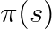 predicts the
demonstrated actions
(i.e. the camera images, robot
joint angles, and maybe task description text), 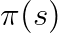 predicts the
demonstrated actions  (often an action
chunk, e.g. the next second of ~50hz).
(often an action
chunk, e.g. the next second of ~50hz).Basically all robot learning systems today (December, 2025) are pure
Behavior Cloning (BC, also called Imitation Learning) systems. Humans
provide (near) optimal demonstrations of a task, and machine learning
models try to imitate those actions. Formally, a policy is trained in a supervised
fashion — given the robot’s state (i.e. the camera images, robot
joint angles, and maybe task description text), 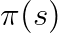 predicts the
demonstrated actions (often an action
chunk, e.g. the next second of ~50hz).
This doc aims to describe the anatomy of a modern BC stack, as well as its shortcomings and (incomplete / clunky) workarounds. It then aims to explain what other approaches people are considering for the future, and the issues preventing them from being the conventional approach. Finally, in concludes with some predictions about the future of robot learning, and navigation advice for the “picks and shovels” salesmen in the Embodied AI race.
First and foremost, to do Behavior Cloning you need data to clone. These come from human demonstrations, and from a variety of sources.
Humans directly teleoperate a full robot (follower) using a controller (leader). This can be done with a full copy of the robot setup (ALOHA1) or a smaller, lighter scaled down version (GELLO2).
Pros:
Cons:
Rather than full leader follower, humans hold devices (e.g. Universal
Manipulation Interface3) in their hands and use these
devices to perform the task. The end effectors match the robot, along
with a cheap version of the sensor suite onboard the robot to try to
reconstruct . Devices perform SLAM to get
end effector pose in task space, such that IK can later be used to
estimate full joint state.
Pros:
Cons:
and , introducing a domain gap that
can severely harm policy performance
YouTube and other video sources have large scale data of humans performing all kinds of tasks. Similarly, many factories feature humans performing dexterous tasks, and these workers can be augmented with cameras to record their observations, providing an enormous source of data.
Pros:
Cons:
and
Behavior cloning sounds simple in principle — supervise to predict .
However, even with extremely clean demonstration data these policies still wander into out of distribution states. There are several reasons for this:
, which in turn can impact the
prediction of (e.g. cannot see inside of a
crumpled shirt to see its internal folds) and inherent multi-modality in
the action distribution from demonstrators that in turn influence the next
state 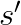, this error compounds
upon itself as it rolls out recursivelyTackling these challenges requires design choices, both for the model itself and for the data it’s trained on. Modeling choices are important —strong, data driven priors (e.g. VLMs) and the right model class to handle the multi-modality in the action distribution (either discrete autoregression, where the model inherently models the full probability distribution over the next token, or continuous denoising, where the model is trained to sample from the true target distribution) — but the data distribution the model is trained on arguably matters more.
As discussed in 3), naively training these models on expert human demonstrations will result in the accumulation of errors in their predictions during inference, leading them to drift out-of-distribution into states they’ve never seen before. While the strong visual priors of a VLM can help the model generalize to novel states, there will still be scenarios where the model fails.
This is why it’s important to not just naively train on expert human data! In addition to these straightforward task demonstrations, it’s critical to train the model how to get out of these failure states — a “DAgger”6 style approach. There’s a bit of nuance to constructing this data — you want to train your model to leave these bad states, but you do not want to accidentally train to enter these bad states, lest it imitate this data and intentionally visit these bad states. Doing this right means carefully curating your recovery data.
Building out this DAgger data is an iterative process, and an art at that. You train the model for the given task, observe its failure modes, concoct a new dataset to try to address those failure modes, retrain, and retry. This is a tedious process, requiring many hours of very smart and discerning human time to essentially play whack-a-mole with various issues. Along the way, you start to develop a touch and feel for the policy and its issues. Due to the need for rapid iteration, this is typically done as a post-training step atop a base pretrained policy, and hopefully that base policy has already seen quite a bit of task data such that it already mostly knows what it’s doing.
This frustration is compounded by the fact that the touch and feel you have developed from your task iteration can be completely wiped out by a new pretraining of the base policy, sometimes presenting a new (but hopefully much smaller) set of failure modes. This DAgger data can be included in a pretraining run, and alongside data scale often results in higher quality predictions and fewer failures. With sufficient effort on data iteration, policies can be made to be surprisingly robust.
As these policies get more robust, they also take more of your time to evalaute their performance. If your policy typically fails every 15 seconds, you only need a few minutes of evals comparing training run A vs B to get signal on their performance. If your policy takes minutes to hours between failures, you need to spend many hours doing evals to get any relative signal. It’s tempting to look for offline metrics (e.g. the validation MSE featured in = Generalist’s blogpost7), but emperically there is very poor correlation between these offline metrics and on-robot performance.
DAgger addresses robustness issues, and avoiding catastrophic failures can speed up your average time to complete a task, but it does nothing to improve your speed in best-case-scenario. Given a dataset, you can discard all but the fastest demonstrations (losing enormous data scale and likely hurting robustness), or condition on speed (see: Eric Jang’s “Just Ask For Generalization”8), but none of these allow for faster than human demonstration performance.
Another trick is to simply execute the policy actions at faster than realtime (e.g. execute 50hz control at 70hz), but this stresses your low level control stack and leads to incorrect behavior when interacting with world physics (e.g. waiting for a garment to settle flat on a table after being flicked in the air).
The 2025 BC stack kind of sucks. It is not just bottlenecked on data scale to get generalization, but also the speed of the data collectors providing the demonstrations and the hustle (and taste) of the data sommelier doing DAgger to address any failures.
Ideally, we want robot systems that self-improve:
Reinforcement Learning seems to fit this bill. RL has been wildly successful in the LLM space, and it’s tempting to imagine we can drag and drop the same techniques into robotics. Unfortunately, this has yet to pan out, despite several different approaches.
LLMs differ from robotics in two important ways:
Because of these two factors, online, on-policy RL becomes feasible.
Either directly, or after a little bit of supervised fine-tuning from a
few expert demonstrations, the policy can start to achieve a non-zero
success rate from a given state . This allows for the LLM to
simply be rolled out hundreds or thousands of times from as a form of exploration,
receive (sparse) rewards from the environment on how its performed, and
directly update its policy.
Importantly, this process avoids having to hallucinate a
counterfactual. By rolling out many different trajectories from , it avoids having to
hallucinate “what if”s and instead directly receives environment
feedback from its already strong guesses.
Robotics has none of these luxuries in the real world. Given the
state of a messy kitchen at the
beginning of a “clean the kitchen” task, we do not have the ability to
easily perfectly replicate the clutter in the kitchen hundreds of times,
nor do we have strong enough base models that we can reliably fully
clean the kitchen with some nonzero success rate.
Thus, we either need to leverage simulation, where we can reliably
reconstruct arbitrarily many times (and
suffer the sim to real gap), or we need to be able to hallucinate good
quality answers to counterfactuals given only a single real rollout from
a real state .
NB: I am not a sim expert.
In LLMs, there is no sim-to-real gap — the environments it interacts with during training are the exact same environments it will see at inference. However, in robotics, our simulators are a facsimile for the real world, and often a poor one at that. Simulators have naive physics models, have to make numerical estimates to handle multiple colliding bodies, must select contact models with different tradeoffs, are poor models of non-rigid objects, and have large visual gaps between sim and real.
For these reasons training policies entirely in simulation performs very poorly when transferring to the real world. Domain randomization, i.e. significantly varying the parameters of the simulator, helps, as does having a highly structured visual input representation (e.g. scan dots), but outside of locomotion (e.g. RMA9) this has seen limited success on robots.
There is ongoing work in “world models”, which are effectively learned simulators. One major reason for hope is, unlike a policy which needs to know the optimal action given a state, a world model need only simulate the dynamics given a state and action. In domains with structure (such as the real world, which has physics composable rules of interaction), any state action transition data, be it from an optimal or a random policy, seemingly should aid in learning general dynamics, hopefully giving us a shot at building a good, general purpose world model. That said, as of today, I am unaware of any work that comes close to modeling well the sort of environment interaction dynamics that we care about for dexterous manipulation.
Using real-world data avoids any sim to real gap, the same reason we were animated to do BC to begin with. However, learning to improve directly from your own policy rollouts has a number of hurdles.
The goal of an RL improvement loop is to upweight relatively good
actions and downweight relatively bad ones. To know if an action was
relatively good or not, we need to answer counterfactuals; as
we discussed in the LLM section, we don’t have the luxury of simply
running the policy over and over from the same state, trying a bunch of
semi-reasonable actions to estimate the relative performance of action
vs 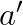. Instead, we need
some sort of system to hallucinate this; either a Q function that
directly estimates discounted reward 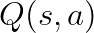, or some knowledge
of the transition dynamics 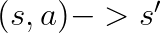 and then the Value of nearby state 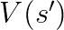.
Notably, both  and
and  are a sort of world model by a
different name; rather than predicting some future state in its entirety
as you might imagine out of a learned simulator, its instead baking in a
bunch of long horizon information about how, under good decision making
through future interactions with the world, you will ultimately get to
the goal.
are a sort of world model by a
different name; rather than predicting some future state in its entirety
as you might imagine out of a learned simulator, its instead baking in a
bunch of long horizon information about how, under good decision making
through future interactions with the world, you will ultimately get to
the goal.
As you might imagine, this too is quite challenging, and learning
good Q or V functions is an open area of research. Very recently,
Physical Intelligence released  10, an approach that performs
advantage weighted regression (BC, but rather than weighting every
transition equally, weight it by 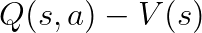),
where they show minor improvements beyond that of just doing naive BC on
the same data. However, in many of the tasks, the policy also
required human DAgger data, and it’s clearly not a silver bullet for
real world RL. There is much more work to be done in building good,
reliable Q and V functions such that they work well out of distribution,
without grossly over or under estimating their true values.
10, an approach that performs
advantage weighted regression (BC, but rather than weighting every
transition equally, weight it by 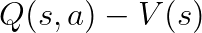),
where they show minor improvements beyond that of just doing naive BC on
the same data. However, in many of the tasks, the policy also
required human DAgger data, and it’s clearly not a silver bullet for
real world RL. There is much more work to be done in building good,
reliable Q and V functions such that they work well out of distribution,
without grossly over or under estimating their true values.
Here’s a bunch of predictions about the future of robot learning:
As part of understanding where the field is going, many people have asked me for advice about building “picks and shovels” startups to profit from the Embodied AGI race. I think:
I think the only solid foundation for the future is: human demonstrations will continue to matter. If you build out a hardware plus software stack for demonstration (either GELLO or UMI) that reduces the painpoints described above and you can show produces good policies by training some, you will be an attractive business partner if not outright acquisition target.
Zhao, T. Z., Kumar, V., Levine, S., & Finn, C. (2023). Learning Fine-Grained Bimanual Manipulation with Low-Cost Hardware. Robotics: Science and Systems (RSS).↩︎
Wu, P., Shentu, Y., Yi, Z., Lin, X., & Abbeel, P. (2023). GELLO: A General, Low-Cost, and Intuitive Teleoperation Framework for Robot Manipulators. IEEE/RSJ International Conference on Intelligent Robots and Systems (IROS).↩︎
Chi, C., Xu, Z., Pan, C., Cousineau, E., Burchfiel, B., Feng, S., Tedrake, R., & Song, S. (2024). Universal Manipulation Interface: In-The-Wild Robot Teaching Without In-The-Wild Robots. Robotics: Science and Systems (RSS).↩︎
Generalist AI Team. (2025). GEN-0: Embodied Foundation Models That Scale with Physical Interaction. Generalist AI Blog. Available at: https://generalistai.com/blog/nov-04-2025-GEN-0↩︎
Sunday Team. (2025). ACT-1: A Robot Foundation Model Trained on Zero Robot Data. Sunday AI Journal. Available at: https://www.sunday.ai/journal/no-robot-data↩︎
Ross, S., Gordon, G., & Bagnell, J. A. (2011). A Reduction of Imitation Learning and Structured Prediction to No-Regret Online Learning. AISTATS.↩︎
Generalist AI Team. (2025). GEN-0: Embodied Foundation Models That Scale with Physical Interaction. Generalist AI Blog. Available at: https://generalistai.com/blog/nov-04-2025-GEN-0↩︎
Jang, E. (2021). Just Ask for Generalization. [Blog Post]. Available at: evjang.com/2021/10/23/generalization.html↩︎
Kumar, A., Fu, Z., Pathak, D., & Malik, J. (2021). RMA: Rapid Motor Adaptation for Legged Robots. Robotics: Science and Systems (RSS).↩︎
Amin, A., et al. (2025). 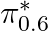: a VLA that Learns from Experience. Physical Intelligence.↩︎